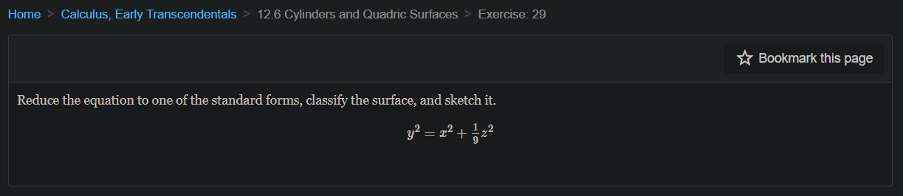
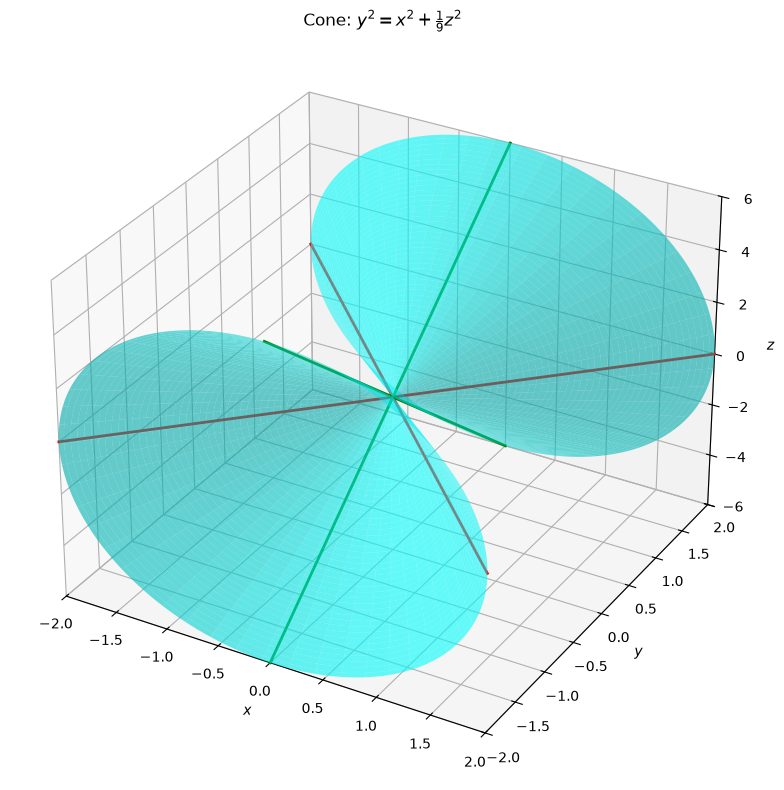
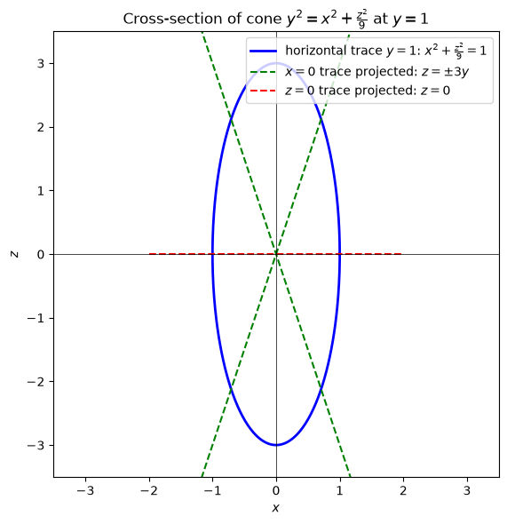
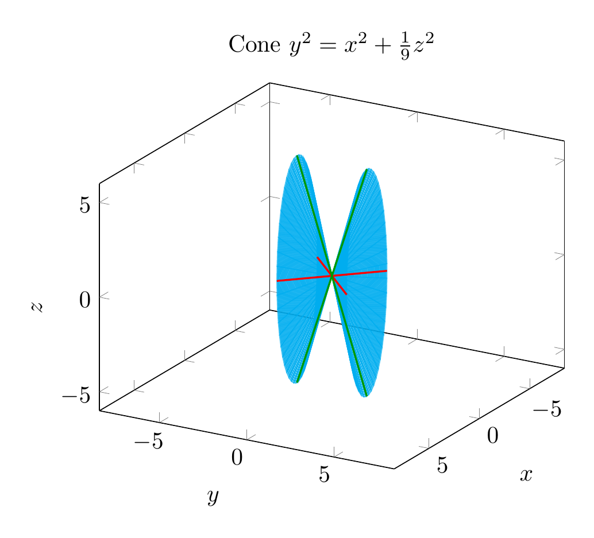
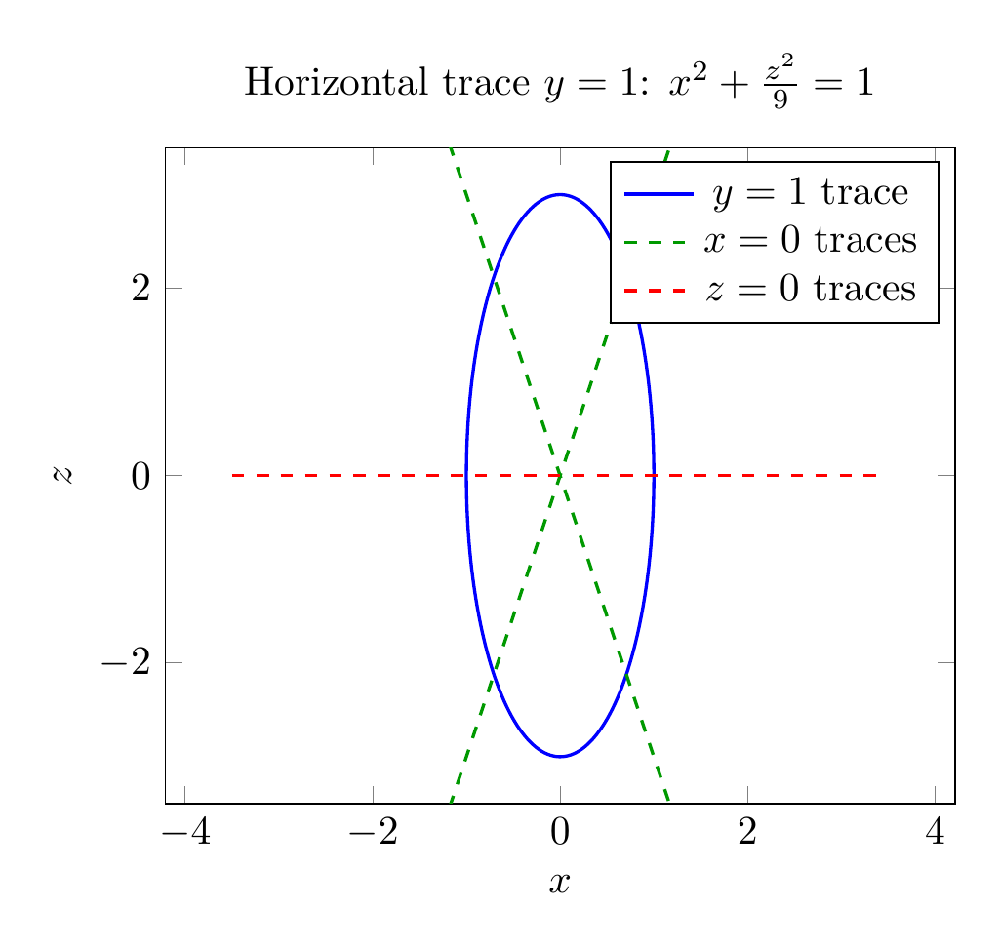

Path: mcma-Kimi-K2.7-Code/calculus-12.6.29/chat_20260825_024021_333634_utc_0800
Problem
Please solve the math problem in the image.

End of problem
Answer
**Solution**
We are asked to reduce the equation to a standard form, classify the surface, and sketch it.
Given equation:
$$y^2 = x^2 + \frac{1}{9}z^2$$
Move all terms to one side:
$$x^2 - y^2 + \frac{z^2}{9} = 0$$
Equivalently,
$$x^2 + \frac{z^2}{9} = y^2$$
or in standard form
$$\frac{x^2}{1} + \frac{z^2}{9} = \frac{y^2}{1}.$$
This matches the standard form of an **elliptic cone** whose axis is the $y$-axis:
$$\frac{x^2}{a^2} + \frac{z^2}{c^2} = \frac{y^2}{b^2}.$$
Here $a=1$, $b=1$, $c=3$.
**Classification:** The surface is an **elliptic cone** (a circular cone would require equal coefficients on $x^2$ and $z^2$; here they differ, so it is elliptical).
**Key traces:**
- Horizontal traces $y=k$ are ellipses:
$$\frac{x^2}{k^2} + \frac{z^2}{9k^2} = 1.$$
- The trace in the $xz$-plane ($y=0$) is just the origin.
- The trace in the $xy$-plane ($z=0$) is the pair of lines $y=\pm x$.
- The trace in the $yz$-plane ($x=0$) is the pair of lines $y=\pm \frac{z}{3}$.
These straight-line traces confirm the surface is a cone with vertex at the origin opening in the positive and negative $y$-directions.
$$\boxed{\frac{x^2}{1} + \frac{z^2}{9} = \frac{y^2}{1},\;\text{elliptic cone}}$$
---


\documentclass[border=10pt]{standalone}
\usepackage{pgfplots}
\pgfplotsset{compat=1.17}
\begin{document}
\begin{tikzpicture}
\begin{axis}[
view={120}{20},
xlabel=$x$,
ylabel=$y$,
zlabel=$z$,
title={Cone $y^2=x^2+\frac{1}{9}z^2$},
xmin=-2, xmax=2,
ymin=-2, ymax=2,
zmin=-6, zmax=6,
axis equal,
colormap={mycm}{color=(cyan) color=(cyan)},
samples=50,
samples y=50,
domain=0:2,
y domain=0:360,
]
\addplot3[surf,opacity=0.6,shader=flat] ({x*cos(y)},{x},{3*x*sin(y)});
\addplot3[surf,opacity=0.6,shader=flat] ({x*cos(y)},{-x},{3*x*sin(y)});
\addplot3[red,thick,domain=-2:2,samples=100] (x,x,0);
\addplot3[red,thick,domain=-2:2,samples=100] (x,-x,0);
\addplot3[green!60!black,thick,domain=-6:6,samples=100] (0,x/3,x);
\addplot3[green!60!black,thick,domain=-6:6,samples=100] (0,-x/3,x);
\end{axis}
\end{tikzpicture}
\end{document}

\documentclass[border=10pt]{standalone}
\usepackage{pgfplots}
\pgfplotsset{compat=1.17}
\begin{document}
\begin{tikzpicture}
\begin{axis}[
xlabel=$x$,
ylabel=$z$,
title={Horizontal trace $y=1$: $x^2+\frac{z^2}{9}=1$},
xmin=-3.5, xmax=3.5,
ymin=-3.5, ymax=3.5,
axis equal,
samples=200,
]
\addplot[blue,thick,domain=0:360] ({cos(x)},{3*sin(x)});
\addplot[green!60!black,dashed,thick,domain=-2:2] {3*x};
\addplot[green!60!black,dashed,thick,domain=-2:2] {-3*x};
\addplot[red,dashed,thick,domain=-3.5:3.5] {0};
\legend{$y=1$ trace, $x=0$ traces, , $z=0$ traces}
\end{axis}
\end{tikzpicture}
\end{document}

End of answer